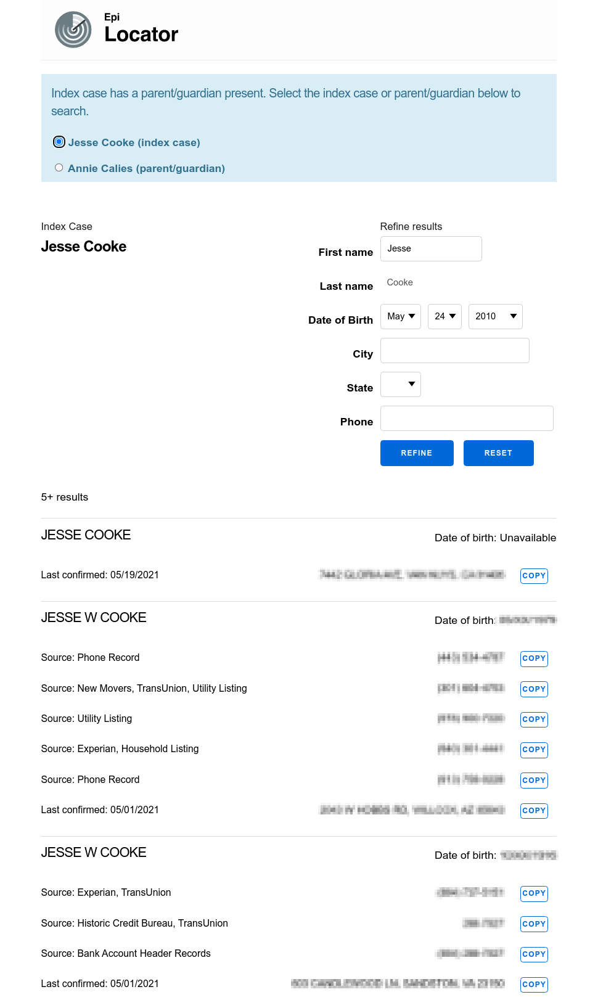

Overview View Source
In NYS, Epi Locator is deployed by its original name, CT Assist.
Contact Tracer Workflow
As a contact tracer ("CT") works on cases in CommCare, they may find a patient case is missing full and/or accurate contact information. From the Case Investigation form, the CT can click the "Search CT Assist for phone and address" link which will open Epi Locator in a new browser tab and perform a search against the Thomson Reuters ("TR") CLEAR S2S API. The CT can then copy relevant contact information from Epi Locator into their clipboard, then into CommCare. Epi Locator does not write data to CommCare.
sequenceDiagram; CT->>+CommCare: Click button; CommCare->>CommCare: generate signature; CommCare->>Epi Locator: POST; alt signature in cache; Signature Cache-->>Epi Locator: used signature; Epi Locator-->>CT: access denied; else signature not in cache; alt signature invalid; Signature Cache-->>Epi Locator: invalid signature; Epi Locator-->>CT: access denied; else; Signature Cache-->>Epi Locator: valid signature; alt query in cache; Query Cache-->>Epi Locator: return results; else query not in cache; Epi Locator->>CLEAR S2S: initiate search; CLEAR S2S->>CLEAR S2S: perform search; CLEAR S2S-->>Epi Locator: search results; Epi Locator-->>CT: present results; end; end; end;Integration with CommCare
Epi Locator authenticates with CommCare by verifying an HMAC signature that is passed
from CommCare to Epi Locator by a form POST. Please see the CommCare source
code
for their implementation. Epi Locator mirrors this implementation locally for development purposes in the
commcare_signature.html.eex template.
The signature is verified in EpiLocatorWeb.Plugs.RequireValidSignature with EpiLocator.Signature.valid?/3.
We store the signature in a cache in EpiLocator.Signature.Cache and reject any signatures that have
already been used.
If the signature is valid, Epi Locator performs a search through cache to the TR CLEAR S2S API. Because TR charges per query, we store results from previous queries in our cache to minimize costs. If a cache entry for a query doesn't already exist, we make an API request and store the results.
CLEAR S2S API Integration
In order to make requests against the CLEAR S2S API, one must ask TR to provision a certificate
that is used to sign HTTP requests to the API. They will send a PFX file, which will need the certificates
extracted via the following command:
openssl pkcs12 -in input.pfx -out certificate.cer -nodesThe result file contains a key and 2 certificates. The first certificate in the cert chain will need all the newlines converted to literal \n
characters and made available to the application via environment variables:
THOMSON_REUTERS_BASIC_AUTH
THOMSON_REUTERS_CERT_PASSWORD
THOMSON_REUTERS_API_ENDPOINT
THOMSON_REUTERS_PRIVATE_KEY
THOMSON_REUTERS_PUBLIC_CERTSee EpiLocator.ThomsonReuters.Config for more details. Each time a query is made, a
EpiLocator.QueryResultLog is stored with stats relevant to the query. These stats can be accessed
through the admin login, where one can download all entries or monthly summaries.
Refining Search Results
CTs have the ability, when presented with multiple search results, to refine the results.

Each time the results are refined, a EpiLocator.RefinementLog is stored with stats relevant
to the specific refinement. These stats can be access through the admin login, where one can
download all entries or monthly summaries.
Performance
75% of requests to the CLEAR S2S API are returned within 700-1000 ms.
WITH query_result_logs_stats AS (
SELECT
min(msec_elapsed) AS min,
max(msec_elapsed) AS max,
count(*) AS total_count
FROM
query_result_logs
WHERE
msec_elapsed BETWEEN 100 AND 2560
),
histogram AS (
SELECT
width_bucket(msec_elapsed, min, max, 49) AS bucket,
int4range(min(msec_elapsed), max(msec_elapsed), '[]') AS RANGE,
count(*) AS freq
FROM
query_result_logs,
query_result_logs_stats
WHERE
msec_elapsed IS NOT NULL
AND msec_elapsed != 0
AND msec_elapsed BETWEEN 100 AND 2560
GROUP BY
bucket
ORDER BY
bucket
),
freeq AS (
SELECT
bucket,
RANGE,
freq,
repeat('■', (freq::float / max(freq) OVER () * 100)::int) AS bar,
freq::float / total_count * 100 AS pct
FROM
histogram,
query_result_logs_stats
GROUP BY
bucket,
RANGE,
freq,
pct
ORDER BY
bucket
)
SELECT
*
FROM
freeqReleases
Please see the Release log.